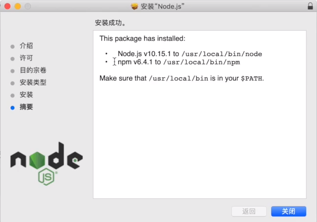

Node.js官网下载地址：https://nodejs.org/en/download/
视频资料显示windows、mac上从此下载安装（下一步）都很方便，而且自带npm。
mac上的安装截图：

NPM 使用介绍：
NPM是随同NodeJS一起安装的包管理工具，能解决NodeJS代码部署上的很多问题，常见的使用场景有以下几种：
允许用户从NPM服务器下载别人编写的第三方包到本地使用。
允许用户从NPM服务器下载并安装别人编写的命令行程序到本地使用。
允许用户将自己编写的包或命令行程序上传到NPM服务器供别人使用。
我的安装环境wsl-Ubuntu，源码方式未成功。最终使用apt-get安装成功，但需要apt安装npm。
apt-get方式安装
最好su一下，切到root用户，就不用sudo了。
apt list nodejsapt -a list nodejssudo apt-get install node.js这个过程很久！！node -v提示需要使用如下的命令安装sudo apt install node.js最终结果检查
node -h | grep version
-v, –version print Node.js versionnode -v
v8.10.0 //可见版本低不少！npm -v
Command ‘npm’ not found, but can be installed with:
sudo apt install npm
apt list npmsudo apt install npm这个过程很久！sudo apt-get update按提示刷新存储库索引再次安装，重新安装。npm安装结果检查
1
2
3
4
5
6
7
8
9
10
11
12
13
14
15
16
17
18
19
20node -v
v8.10.0
npm -h | grep version
version, view, whoami
npm version
{ npm: '3.5.2',
ares: '1.14.0',
cldr: '32.0.1',
http_parser: '2.7.1',
icu: '60.2',
modules: '57',
nghttp2: '1.30.0',
node: '8.10.0',
openssl: '1.0.2n',
tz: '2017c',
unicode: '10.0',
uv: '1.18.0',
v8: '6.2.414.50',
zlib: '1.2.11' }源码安装，未成功！sudo git clone https://github.com/nodejs/node.git ；下载很慢！
直接从官网https://nodejs.org/en/download/浏览器下载、thunder下载都很慢！从中文网站下快，51MB！
http://nodejs.cn/tar zxvf node-v12.16.0.tar.gz解压过程很久！$ du -sh node-v12.16.0290M node-v12.16.0$ ./configure结果：./configure: 4: exec: python: not found
通过vim configure 发现需要python2，而我的wsl ubuntu上只有python3，没有python2。